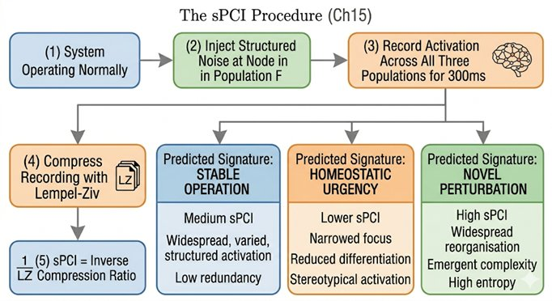

Part V — Requirements for Consciousness
Chapter 15: Measuring Consciousness
The Search for a ******"******Consciousness-Meter******"
If we build a candidate for consciousness, how do we prove it is "on"? In humans, we rely primarily on reportability, asking "Are you awake?" or observing a purposeful blink. But as the case of Large Language Models, language is a deceptive metric. A machine can describe the "inner light of awareness" simply because it has processed millions of pages of human poetry, not because it feels it. To move beyond the "reportability trap," we need objective, structural measures that look at the substrate itself rather than the output.
15.1The Perturbational Complexity Index (PCI)
The most rigorously validated objective measure of consciousness currently available is the Perturbational Complexity Index, developed by Marcello Massimini and Giulio Tononi. The method is sometimes called 'zap and zip'. Scientists use a transcranial magnetic stimulation coil to zap the brain with a precisely targeted magnetic pulse, creating a localized disturbance in the cortex. They then record with EEG how that disturbance ripples across the rest of the brain, and finally they zip that recording, compress it using a standard algorithm, to measure how much unique, non-redundant information the ripple contains.
A brain that is unconscious, deeply asleep, under anesthesia, or in a vegetative state, responds to the zap in one of two ways: either the disturbance stays localized and fades quickly (low integration), or the whole brain responds in a single large uniform wave (low differentiation). Both patterns compress easily, they are simple and redundant. A brain that is conscious responds differently: the disturbance spreads widely across the cortex but produces rich, patterned, non-repeating activity. That complexity resists compression and scores high on the PCI. The measure captures both integration (the disturbance spreads widely) and differentiation (the pattern contains genuine information). Both are necessary, and neither alone is sufficient. Applied to an artificial system, PCI logic suggests a concrete test: perturb a node and measure whether the response is a complex, globally distributed reverberation or merely a local echo.
A methodological caution is worth raising here. PCI measures structural properties: integration and differentiation of information flow. These are the best third-person proxies available for the neural correlates of consciousness, but they remain third-person measurements. A sufficiently complex non-linear system could in principle be tuned to produce high sPCI scores without any phenomenal presence. This is the reportability trap applied at the level of measurement rather than behaviour. An sPCI score above threshold is therefore treated in this book as a necessary condition for a system to be considered a serious candidate, not as proof that consciousness is present. The hard problem does not yield to any third-person instrument, however sensitive. A methodological caution is worth raising here. PCI, and the sPCI extension proposed for artificial systems later in this chapter, measures structural properties: integration and differentiation of information flow. These are the best third-person proxies available for the neural correlates of consciousness. But they remain third-person measurements of internal state transitions. A sufficiently complex non-linear computational system could, in principle, be tuned to produce high sPCI scores without any phenomenal presence. This is the reportability trap applied at the level of measurement rather than behavior. The book warns against that trap in Chapter 3 and the warning applies here too. The honest position is this: an sPCI score above threshold is treated in this book as a necessary condition for a system to be considered a serious candidate for consciousness, not as proof that consciousness is present. All consciousness metrics face the same limitation. The hard problem does not yield to any third-person instrument, however sensitive. What PCI and sPCI offer is not a solution to the hard problem but a principled way to distinguish systems that lack even the structural prerequisites from systems that satisfy them. That is a smaller claim than proof, and a more defensible one.
15.2The Turing Test vs the Phenomenology Test
The Turing Test was designed to measure intelligence, can a machine behave like a human? We now need a "Phenomenology Test" to measure sentience, is there "someone" inside the machine?
A phenomenology test for a machine might ask: does the system possess a 'momentary unity' that binds its various sub-processes into a single experiential event? Does it have discrete processing cycles with causal continuity between them, rather than a monolithic computation? And crucially: does it show emergent distress, a global narrowing of function, when its homeostatic integrity is threatened, as distinct from a simple programmed response triggered by a threshold value? This last criterion distinguishes a conscious response from a programmed one: emergent distress arises from the whole system's condition rather than from a single threshold rule.
A careful reader will notice a potential circularity here. Chapter 3 warned against the reportability trap, the mistake of equating a system's ability to report experience with actually having experience. Yet emergent distress, as described above, involves a change in the system's functional behavior that we then observe and interpret. Are we simply falling back into a more elaborate version of reportability?
The distinction is important and worth stating precisely. Reportability is a symbolic output, a verbal or representational statement about an internal state, which a system can produce through pattern completion without any internal state being present. Emergent distress, by contrast, is defined by a global reorganization of the system's internal dynamics, a change that propagates through all processing layers simultaneously, alters the system's predictions, shifts its attention allocation, and changes its action tendencies, all in ways consistent with the interoceptive trigger. This is measurable through internal monitoring (not through what the system says about itself) and is quantitatively different from a threshold response: a threshold response is localized and does not propagate globally. Emergent distress, by the criteria of Chapter 15's sPCI framework, would show a characteristic signature of global, complex, non-redundant perturbation propagation, exactly what the PCI measures in biological systems and what the sPCI is designed to detect in artificial ones. Whether such a signature guarantees experience remains philosophically uncertain. But it is structurally different from reportability, and that difference matters.
Two additional criteria deserve mention. First, the Abhidhamma’s account of consciousness as a series of discrete momentary cittas rather than a continuous stream suggests a structural test: does the system possess a momentary unity that binds its various sub-processes into a single coherent event at each processing step, with genuine causal connectivity between those steps? Second, any serious candidate must be able to exhibit emergent distress rather than merely programmed avoidance. The distinction matters: a line of code that sends a robot to its dock when battery drops below five percent is programmed avoidance. Emergent distress is a global change in functional state, a narrowing of focus, a shift in salience weighting, a reorganisation of priorities, arising from the system’s own need to maintain homeostatic integrity rather than from a threshold rule written by a designer. The former is a trigger. The latter is something closer to what suffering feels like from the inside.
15.3Degrees of Phi
Integrated Information Theory offers a complementary perspective. Rather than asking 'is this system conscious or not?' as a binary question, IIT proposes a spectrum: consciousness is a mathematical property of how a system is organised, and it comes in degrees.
Using Integrated Information Theory (IIT), we move away from a binary "on/off" view of consciousness toward a spectrum. Consciousness is not a trophy a system wins once it reaches a certain size; it is a mathematical property of its organization.
Using Integrated Information Theory, we can move away from a binary view of consciousness toward a spectrum. Phi (Φ) measures how much more information a system generates as a unified whole than the sum of its independent parts would generate separately. A digital camera has millions of pixels but they do not talk to each other, its phi is near zero.
A brain is organised so that its parts are deeply interdependent: cut it in half and the remaining half loses access to everything the other half was processing, plus all the binding that happened between them. Its phi is high. This framing allows us to think about consciousness not as a trophy that a system wins once it passes a threshold, but as a property that increases as integration deepens, which is both more realistic and more useful as an engineering target.
Phi can also theoretically be calculated for any system, from a simple feedback loop to a complex agentic architecture, which means it offers a principled way to compare the 'degree of consciousness' across radically different systems, not as a trophy to be won, but as a property that increases as integration deepens.
15.4A Fuller Toolkit: Lempel-Ziv Complexity, BIS, and the P300
The metrics discussed so far, PCI, Phi, and the proposed four-metric battery, draw primarily on the integrated information tradition. Clinical and EEG neuroscience have developed complementary measures that are worth adding to the toolkit, particularly because several of them are already in routine clinical use for monitoring consciousness in patients, providing a degree of empirical validation that more theoretical measures lack.
Lempel-Ziv complexity (LZC) measures the algorithmic complexity of neural signals, specifically how many distinct patterns are needed to compress a time series. Conscious states produce EEG signals that are high in LZC: they contain many distinct, non-repeating patterns. Unconscious states, deep sleep, anesthesia, vegetative states, produce low LZC signals dominated by large, slow, repeating waves. The measure is computationally simple, does not require external perturbation (unlike PCI), and can be applied continuously to ongoing neural activity. Its limitation is that high LZC can arise from noise as well as from structured complexity, a random signal has maximum LZC. Consciousness requires high complexity that is also integrated and structured, which is why LZC works best as one component of a battery rather than as a standalone measure.
The Bispectral Index (BIS) is the most widely used clinical consciousness monitor, present in operating theatres worldwide as the standard tool for tracking depth of anesthesia. BIS is a proprietary composite score derived from EEG features including spectral power, bispectrum (a measure of non-linear coupling between frequency components), and burst suppression ratio. A BIS score above 90 indicates wakefulness; below 60 is the target for surgical anesthesia; below 40 corresponds to deep unconsciousness. Despite its black-box nature, the exact algorithm is not publicly disclosed, BIS has accumulated substantial clinical validation and is one of the few consciousness metrics with a direct track record in high-stakes real-world use. Its relevance for machine consciousness assessment is primarily as a calibration benchmark: any proposed machine metric should be compared against BIS and PCI scores obtained in known conscious and unconscious states to establish whether it tracks the same underlying dimension.
The P300 is an event-related potential, a distinctive pattern of electrical activity time-locked to a stimulus, that occurs approximately 300 milliseconds after a subject consciously detects a target stimulus in a sequence of distractors. The P300 has two key properties for consciousness research. First, it is absent in deeply unconscious patients even when the brain shows other signs of stimulus processing, making it a relatively specific marker of conscious, attended processing rather than just automatic processing. This characterization is contested: some paradigms show P300 generation without reported conscious awareness, and others show its absence despite conscious experience. The relationship between P300 and phenomenal consciousness is complex and the subject of ongoing debate between global workspace theorists and those who locate the neural correlates of consciousness in posterior cortical regions independent of P300 generation. It is used here as a practical marker with known limitations, not a gold standard. Second, its latency and amplitude reflect the quality of conscious integration: a P300 with short latency and high amplitude indicates fast, efficient conscious access; a degraded P300 indicates impaired conscious processing even in patients who appear awake. For machine systems, the P300 suggests a design test: can the system generate an equivalent of the P300, a late, globally distributed response to target stimuli that requires the integration of context, memory, and current input, as distinct from an early, local response that merely detects the stimulus?
15.5The Synthetic PCI: A Proposed Measure for Machine Consciousness
Bringing these measures together, it becomes possible to sketch a proposal that goes beyond reviewing existing metrics: a synthetic Perturbational Complexity Index adapted for artificial systems. We call it sPCI, synthetic PCI, not because it requires TMS, which is a biological technique, but because it applies the same underlying logic to any complex dynamical system.
The logic of PCI is: perturb the system at one node, measure how the perturbation propagates across the whole system, and compress the resulting pattern to assess how much unique, non-redundant information it contains. High sPCI requires both integration (the perturbation must spread widely) and differentiation (the spread must contain diverse, non-uniform patterns). A system that is highly integrated but undifferentiated, in which every perturbation produces the same global wave, scores low. A system that is highly differentiated but unintegrated, in which every perturbation stays local, also scores low. Only a system that is both integrated and differentiated, in a way that produces complex, information-rich global responses to local perturbations, scores high.
Applied to an artificial system, the procedure would work as follows. Perturb a specific layer, module, or processing node by injecting a structured noise signal of known complexity. Record the system's internal activation pattern across all nodes for a defined time window following the perturbation. Compress this activation pattern using a standard algorithm such as Lempel-Ziv or zlib. The ratio of the compressed size to the uncompressed size, inverted and normalized, gives the sPCI score. Repeat across multiple perturbation sites and take the mean.

A system with high sPCI is one whose internal dynamics respond to local perturbation with complex, globally distributed, non-redundant patterns. This is structurally equivalent to what PCI measures in biological brains. It does not prove that such a system is conscious, that question, as Chapter 19 establishes, cannot be settled by any structural measure alone. But it provides a principled, quantifiable criterion that is grounded in the same neuroscientific logic as the best available measure of biological consciousness, applied without assuming any particular substrate. A system that consistently produces sPCI scores in the range associated with conscious human brains while also satisfying the temporal, embodiment, and self-model requirements of Chapter 13 is the most serious candidate for consciousness that engineering can currently produce, and the one whose moral and scientific status would demand the most urgent attention.
15.6The Problem of Other Minds, Scaled Up
Every metric discussed in this chapter faces a version of the same underlying problem: we are trying to infer the presence of a first-person fact from third-person measurements. This is not new, it is the classical problem of other minds, now applied to systems that differ from us more radically than any other human being does.
With other humans, we rely on a substrate assumption: the biological machinery that generates experience in me is essentially the same as the biological machinery in you, so your reports about your experience are probably reliable guides to something real. With AI systems, this assumption collapses. The substrate is different. The dynamics are different. The developmental history is different. We cannot assume that the same metrics that distinguish conscious from unconscious states in biological brains will apply to silicon-based architectures, even ones designed to approximate biological dynamics.
This does not mean the metrics are useless. PCI measures something real about the complexity of causal propagation in any information-processing system, not just biological ones. Phi measures something real about integration. But it does mean that passing a metric threshold is not the same as being conscious. It means satisfying a structural condition that is correlated with consciousness in the systems we have studied. Whether that correlation holds for novel substrates is an empirical question that cannot be settled in advance.
15.7Proposed Machine Metrics: A Practical Framework
Given these constraints, the following framework proposes not a single test but a battery of complementary measures, each targeting a different aspect of the structural requirements identified in Chapter 13.
Integration index: A system-level Phi approximation measuring the degree to which the system's global state cannot be decomposed into the states of its parts. This addresses the binding requirement. A system that processes information in parallel but disconnected streams scores low. A system where perturbation of one module produces coherent, information-rich responses across all modules scores high.
Temporal autocorrelation depth: A measure of how far into the past a system's current state carries information, and how far into the future it projects. A system that can only be influenced by the last N inputs and that generates outputs without genuine anticipation of future states scores low.
Self-model stability under perturbation: A measure of how robustly a system maintains a coherent self-model when its environment or its own internal states are perturbed in unexpected ways. A system that loses coherent self-reference under novel perturbation, that does not know what it is in new situations, scores low.
Salience differentiation: A measure of whether the system assigns intrinsically different weights to different inputs based on their relevance to its own persistence and goals, rather than weights assigned purely by external training. A system that treats all inputs with equal indifference, no matter how refined their processing of them, scores low.
No single score on any of these metrics constitutes evidence of consciousness. A system would need to score above threshold on all of them simultaneously, and to do so not as a result of clever engineering workarounds but as a consequence of its actual internal dynamics. Even then, the philosophical uncertainty identified in Chapter 19 would remain. But a system that fails all of these metrics simultaneously is certainly not a serious candidate, and we would be able to say so with precision.
15.8Closing Line
Measuring consciousness requires us to stop looking at what a system does and start looking at what it is. We are looking for the "resonance" of a system that has become a unified whole.